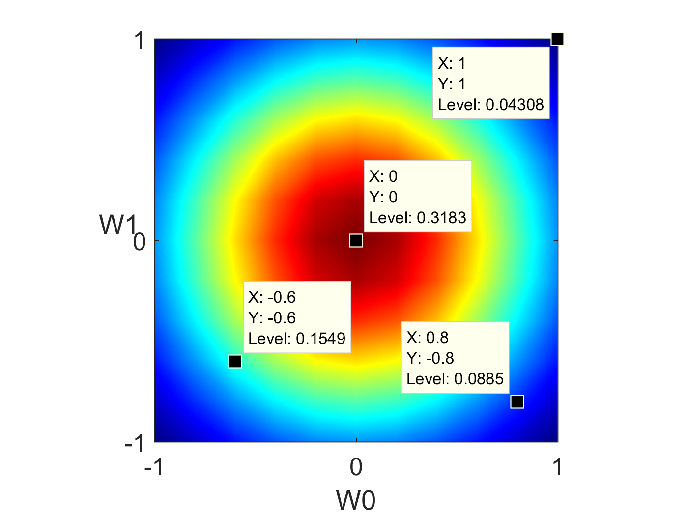
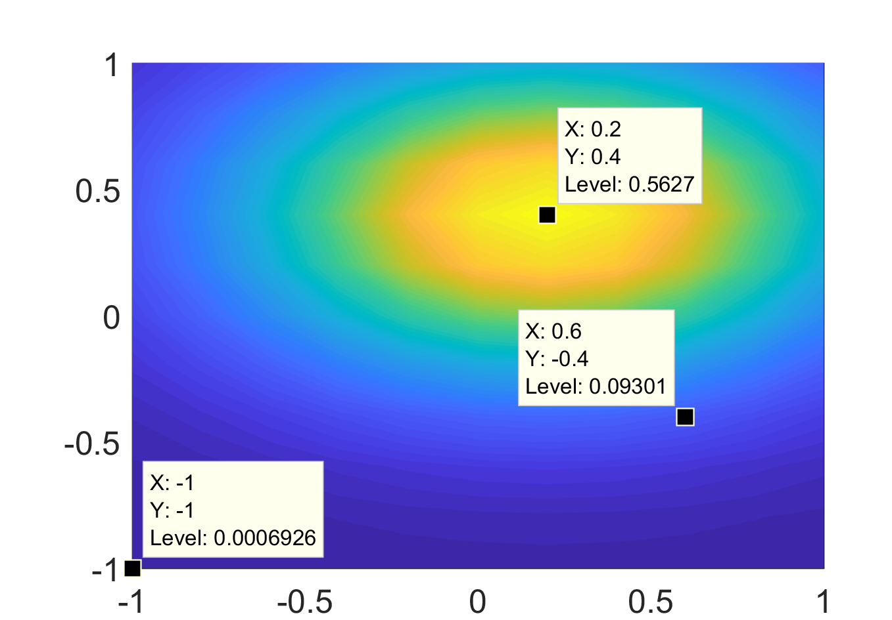
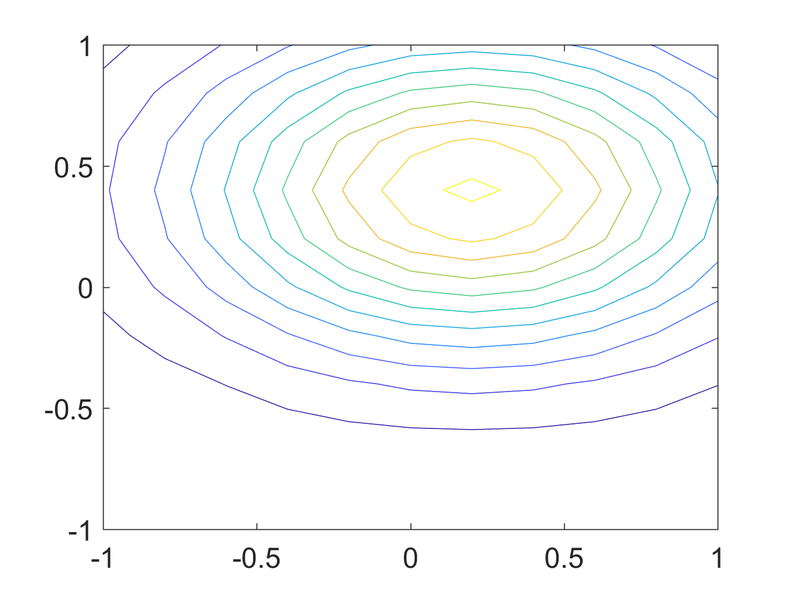

使用 matlab 的 surface 和 contour 画图
1 简介
2 surface
看代码：
1: [X,Y] = meshgrid(-2:0.2:2,-2:0.2:2); 2: Z = X.*exp(-X.^2 - Y.^2); 3: figure 4: surface(X,Y,Z) 5: view(3)
结果如图：

图 1: surface 示例
注意在画图的时候，最后一句 view(3) 是必须的。不然 matlab 会默认使用 view(2) ,看到的会是二维的平面截图。
3 contour
contour 的功能是画一个多维函数的等高线。
看代码：
1: x = -2:0.2:2; 2: y = -2:0.2:3; 3: [X,Y] = meshgrid(x,y); 4: Z = X.*exp(-X.^2-Y.^2); 5: 6: figure 7: contour(X,Y,Z,'ShowText','on')
结果如图2：

图 2: contour 示例
matlab 的帮助手册中有关于 contour 的更详细的说明，包括一些画图的技巧，等高线的间隔，高亮某条等高线等等。
4 gradient

5 高维高斯分布
为了图形直观，以二维为例。向更高维度的扩展是显而易见的，但是通过contourf这样的函数实现高维几何直观就显得超出人类能力范围。
假设均值为\(\mathbf{\mu}\)，方差为\(\mathbf{\Sigma}\)，则高维高斯分布可以表示为：
\begin{equation} \label{eq:2} p(\mathbf{x}|\mathbf{\mu},\mathbf{\Sigma}) = \frac{1}{(2\pi)^{D/2} |\mathbf{\Sigma}|^{1/2} } \exp(- (\mathbf{x} - \mu)^{T}\mathbf{\Sigma}^{-1} (\mathbf{x} - \mathbf{\mu}) ) \end{equation}1: stepSize = 0.2; %0.05; 2: [x,y] = meshgrid(-1:stepSize:1,-1:stepSize:1); % Create grid. 3: [r,c]=size(x); 4: data = [x(:) y(:)]; 5: p = func(data); 6: p = reshape(p, r, c); 7: 8: contourf(x,y,p,256,'LineColor','none'); 9: colormap(jet(256)); 10: axis square; 11: set(gca,'XTick',[-1,0,1]); 12: set(gca,'YTick',[-1,0,1]); 13: xlabel(' W0 '); 14: ylabel(' W1 ','Rotation',0); 15:
这里的 func 是函数句柄。其原型为：
1: priorMean = [0;0]; 2: priorSigma = eye(2)./priorPrecision; %Covariance Matrix 3: priorPDF = @(W)gaussProb(W,priorMean',priorSigma);
gaussProb 实现了式~(\ref{eq:2})。
图4展示了最终的结果：

图 4: 使用countourf画二维高斯图形。
颜色越靠近红色，概率越高；越靠近蓝色概率越低。
当我们改变\(\mathbf{\mu}\)和\(\mathbf{\Sigma}\)的值时，其形状也会发生变化。比如，我们令:
\begin{equation} \label{eq:3} \mathbf{\mu} = [0.2 \quad 0.4] \end{equation} \begin{equation} \label{eq:4} \mathbf{\Sigma} = \begin{bmatrix} 0.4 & 0 \\ 0 & 0.2 \end{bmatrix} \end{equation}其结果如图5所示：

图 5: 使用countourf画二维高斯图形。
如果在上面的代码中使用 contour ，我们可以看到图6：

图 6: 使用countour画二维高斯图形。
contour 又找回了等高线的感觉， contourf 则为这些等高线之间进行颜色插值蒙上一个表面。